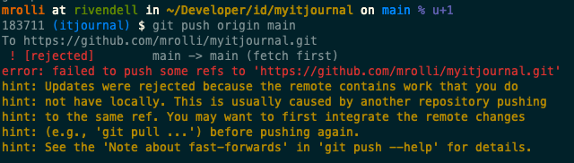

Git
Learning Git
The following three videos by David Mahler are a decent introduction to Git
version control system and teach you the key concepts of Git in a illustrative
way. Runtime is 30m each for total for 1.5h. I wish I started to learn Git this
way back then. 


In addition, the below book, the visual overview of the most used Git commands and lastly the visual playground below are helpful too. And.. Git's very good documentation as the one source of truth as reference.
Configuration files
There are a number of configuration files that git offers and that let user
customize their git experience in great depth. As usual
great powers comes with great responsibility.  Not all configuration
files and options are mentioned here, there
are many more.
Not all configuration
files and options are mentioned here, there
are many more.
First Time Git setup
This step is really important as you set some default behaviour and especially you have to set your identity! This last step - configuring your identity - is neglected very often. Please, don't. No go and read first time git setup
Keep in mind that you just set your global identity. Almost every configuration key is also changeable on repo level. This means while your global identity may be "MrCool cool@test.com", you can still have another identity on a per repo basis, i.e. when implementing stuff for work. You can set your identity within the repo directory by issuing:
git config user.name Max Mustermann
git config user.email max.mustermann@example.com
As you can see, the same commando is run, but --global is left out. Now this
local setting can be found in the config file of the repo, see .git/config at
the top level of the repo itself.
Unsure what your identity is in the current repo? Just run git config user.name or git config user.email respectively.
Repo-local configs
gitignore - Specifies intentionally untracked files to ignore
A gitignore file specifies intentionally untracked files that Git should ignore, see man gitignore or in the git-book.
gitattributes - Defining attributes per path
A gitattributes file is a simple text file that gives attributes to pathnames, i.e. end of line style, see man gitattributes or in the git-book.
Articles
The Thing About Git (15' read)
Often beginners find it oddly strange that there is an index/staging area in Git and are not aware
for what this thing can be used. Other VCS do not have this. Nevertheless it's not an addition just
to make Git more complicated and to bother the developers. The "Tangled Working Copy Problem" illustrates
why this concept makes sense and how you should use it to your favor. There's one important option tot git add
that most beginners overlook (and tutorials almost never teach you), e.g. --patch or -p
Try the following form of adding files to the index next you have to do that and see what happens!
git add --patch somepathspec or git add -p somepathspec
A successful Git branching model (20' read)
This article is the original article from 2010 that introduced/presented the
Git-flow workflow for managing the code for software projects. This is quite a
complex workflow featuring the master and develop branches as the permanent
branches and the branch types feature branch, release branch and hotfix branch
based on the needs. The articles demonstrates a lot of brain work done about
handling different situations and how to solve issues. Please read the author's
reflection at the top and keep it in mind! While this is a proven Git branching
strategy it is quite complex and for many situations and projects a complete
overkill.
Make yourself familiar with other Git branch strategies like the
Github Flow or the Gitlab Flow and then choose the simplest
that is still satisfying your real needs (not the nice to haves). Best use
something that others in your team are already familiar and successful with!
There's a good comparison of git branching strategies over at flaghsip.io. You should least know the principles, pros/cons and differences between these four strategies.
Recipes
My commit messages suck
Symptom
My colleagues and friends are notoriously complaining about my git commit messages. But not only that, they also say that my commits suck pretty often. My commits seem not to be atomic, include whitespace changes or include too much stuff... but, what is a good commit with an equally good commit message anyway?
Discussion and Solution
These topics have been discussed a lot and there thankfully is some common sense about these issues and good write-ups have been done, well worth reading:
- cbeams excellent How to Write a Git Commit Message aka The seven rules of a great Git commit message
- Tim Pope's Note About Git Commit Messages
- ProGit Book on Contributing and Commit Guidelines
- Peter Hutterer's Blog Post On commit messages with how and how not to do git. Especially read the "How not to do it" section!
git push rejected due to remote changes
Symptom
I have committed something (to the main branch) and forgot to pull first. Now I can't push anymore as git rejects the push with the following message:
git push rejected

Discussion and Solution
This usually means that somebody else already added a new commit and pushed to GitHub and now your commit conflicts with the other. What to do now? You would need to:
- Remove your commit(s) and keep the changes
- Run a
git pull --ff-onlyto fetch the new commit from the other person - Re-apply your changes again on top of the latest commit
Solution
git pull --rebase
This command first fetches the latest commits and then rebases your commits on top of the latest commit, see git help pull. Now you may try to push your changes.
Damn, I committed a secret!
Symptom
You just committed a configuration file with a password in it? You entered a real password into a file instead of a dummy password like
123456 and committed it? You added disclosed something else by committing it to the repo? Fear not and read ahead!
Discussion and Solution
There's good cheat sheet from GitGuardian that features a flow chart on how to proceed and save the situation depending on the stage at which you realised that something wrong happened.
Damn, I branched off wrong parent branch!
Symptom
You created a new feature branch and after some commits you realized that you branched off a feature branch instead of the master/main branch?
The situation now looks like this, right?
A---B---C---D main
\
E---F---G other-feature-branch
\
H---I---J new-feature-branch (HEAD)
Discussion and Solution
Well, you could create a new branch off main and then git cherry-pick all commits
over, which would work, but implies additional work, i.e. if you already have setup
a pull request and someone already reviewed the code as you would setup a new branch
and therefore also a new PR and the review would have to be done again...
But we can use git rebase --onto command. It can do exactly what we need.
Replace the old parent branch with new parent branch. In our case with main branch.
For the situation above, we would like to achieve this result:
A---B---C---D main
|\
| E---F---G other-feature-branch
|
\
H'---I'---J' new-feature-branch (HEAD)
To replace parent branch with master, we need to be on new-feature-branch branch and do:
git rebase --onto main other-feature-branch
That’s it. Right now we have our current-feature-branch branch based on master branch, not like before based on feature-branch.
In the end, I would like to say two more things here. First, the general form - rebase some branch from one branch onto another looks like this:
Solution
git checkout branch2move
git rebase --onto new-parent old-parent
The destination branch comes first follow by the old branch. The branch that is moved is the currently checked out!
Second, as you see one schema above, after using git rebase --onto we don’t have
exactly the same commit like before. Code is the same, but the SHA number (you know
the commit identifier, for example 2d4698b) for each commit is different. Everything
will be fine, when you work alone on the branch where you want to do the trick.
In case other people also work on this branch this command can provide problems as
always when you rewrite history and change commit hashes.
More on git rebase --onto can be found in Git rebase --onto an overview
Extract a Subfolder to Its Own Repository
Symptom
Sometimes you come to a point where a certain bit of your code grows that much that you want it to manage in its own repository. Some common use cases might include:
- A Submodule should now be its own library/plugin
- Puppet code deserves its own module
- An ansible playbook should be turned into its own role
You might say: "Well, create new repo, move the files over, check them in and do the first commit. Done. Where's the problem?" What if I tell you, that moving only the files is not enough. I'd want to also move the history of those files. I want all the old commits where these files were referenced in the new repo too!
Solution
It turns out that this is such a common and useful practice that the
overlords of Git made it really easy. The magic command is git subtree
split
-
Prepare the old repo from where you want extract the subfolder, in this example the folder
lib/myparser:cd path/to/bigrepo git subtree split -P lib/myparser -b myparser-onlyI now have a new branch
myparser-onlyin the bigrepo, that exactly contains to contents and its histroy of this very folder. Yeah! Now let's create a now repo from that branch: -
Create the new repo and pull the prepared branch:
The history has now been pull into the new repo.mkdir path/to/myparser; cd path/to/myparser git init git pull path/to/bigrepo myparser-only -
Time to attach the remote (already created at GH) and push:
git remote add origin https://github.com/user/myparser git push -u origin main -
Cleanup inside the bigrepo and remove the extracted stuff:
You're done. Original sourcecd path/to/bigrepo git branch -D myparser-only git rm -rf lib/myparser git ci -m "Extraced myparser to its own repo" git push origin main